第1日: 狄臣港
公司團隊一年一度嘅旅行， 我哋今朝係乘搭馬航嚟到馬來西亞， 班機遲咗成個鐘頭至起飛， 飛到中間有氣流，時不時都要搖晃晃咁， 我哋團隊有個小朋友同行， 佢就不知幾開心，好似去咗冒險樂園咁， 啲大人就驚到震唔敢瞓， 終於坐咗幾個鐘頭都平安到步，感恩！
第一晚我哋嚟到呢間好似水鄉咁嘅渡假屋， 每個房間都有個小泳池， 可惜今次我個同房病咗唔落得水， 所以個泳池係要嚟欣賞， 週邊環境都好靚，所有渡假屋都係喺水上面嘅， 係一個好特別嘅感覺，有D似威尼斯， 之前未住過呢類型嘅屋， 但係呢度天氣唔係好穩定，一時好曬一時又會落雨，但落一陣就會停雨， 要時時帶住把雨傘出街。
 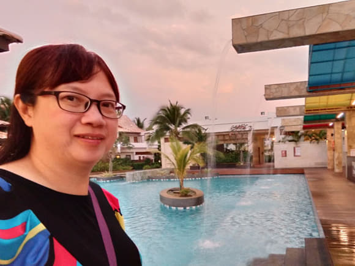
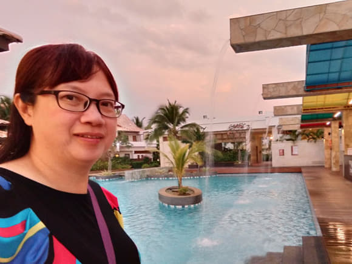
晚餐海鮮餐食七餸一湯, 白飯任裝。
第2日: 馬六甲
琴晚因為 dinner party 唱 K,所以返到酒店已經差不多十二點，沖完涼都要成一點先瞓覺, 點知瞓到半夜警鐘響咗好耐, 於是忍唔住去門窿度裝下外面嘅環境， 走廊一啲人聲都冇， 即係冇事啦所以再瞓返，望下個鐘只係四點半所以再瞓, 六點半就 morning call 啦因為八點鐘要出發去吉隆坡。

 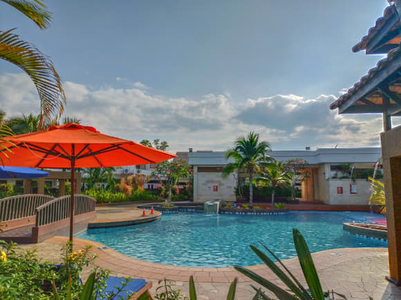
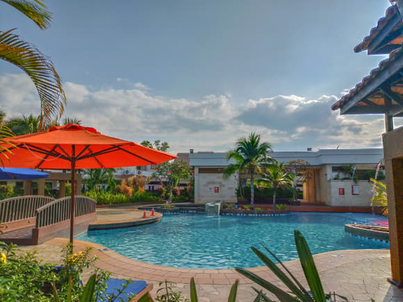
在酒店四周逛了一會, 便去餐廳吃早餐。早餐係好豐富嘅酒店自助早餐。
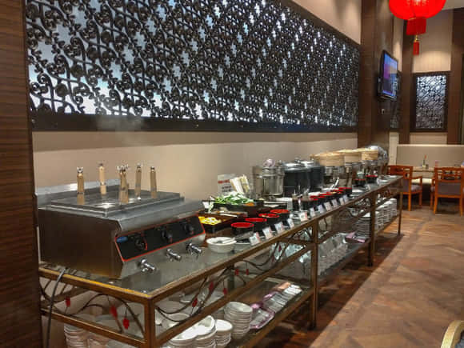 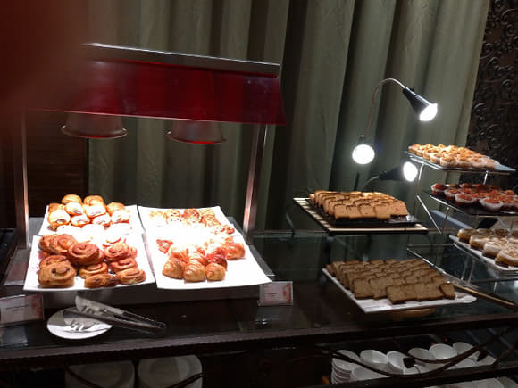跟住十點鐘出發去蝴蝶園, 其實主要唔係睇蝴蝶㗎, 嗰度有昆蟲雀鳥, 同埋食點心水果。
跟住就乘車去佢哋嘅原居民村, 同埋睇吓佢哋D舊屋，仲有人住緊，只係開放其中一户比遊客參觀，再去睇一棵橡膠樹, 係淨返唯一 一棵橡膠樹，仲有啲橡膠汁流出嚟嘅。
 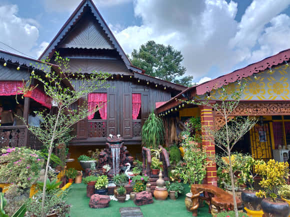
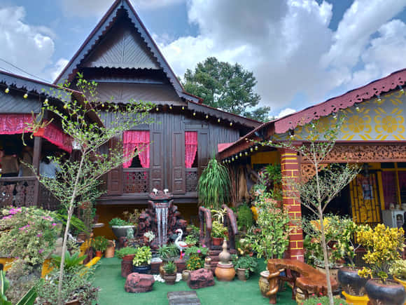
我哋下午去咗聖保祿教堂, 係一個歷史嘅建築物, 我上一次嚟呢個地方就係1986年同老公仔嚟嘅，事隔咁多年舊地重遊, 見到教堂已經粉飾一番, 當年嘅三輪車係冇佈置嘅好簡單，而今日嘅三輪車已經成為遊客嘅遊覽交通工具, 而且有卡通公仔裝飾，色彩繽紛兼有音樂。
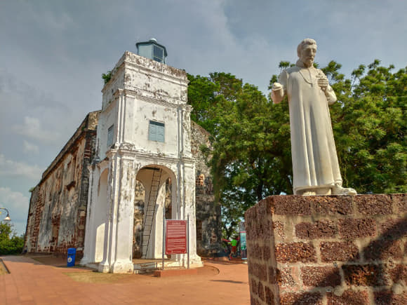我哋住嗰間酒店佢呢個教堂其實係一街之隔, 參觀完教堂就坐三輪車周圍遊覽, 順道去酒店 check in。
第3日: 吉隆坡
酒店有豐富嘅自助早餐， 但係因為要坐兩個幾鐘頭車所以唔敢食得太多， 兩個幾鐘頭後我哋就會去到吉隆坡，由馬六甲嘅西南面出發， 吉隆坡係馬來西亞嘅首都,今晚就會喺吉隆坡度住啦。
第一站去到橡膠嘅製造工場參觀， 呢度斬咗啲橡膠樹作為標本，愛嚟畀遊客睇嘅同埋影吓相, 佢哋嘅產品就係做床褥同埋枕頭, 只係做內銷冇做出口㗎,所以 只可以喺度集體團購, 現場仲有床褥枕頭可以瞓喺度試嘅。
食咗個午飯之後就去七彩階梯 (黑風洞)，都係一啲佛教朝聖嘅地方，睇下嗰啲特色， 搵間舖頭飲咗個椰青係五蚊馬幣， 食咗塊紙巾薄餅， 亦都係五蚊馬幣一塊。
之後上車去咗一間賣豬肉乾雞肉乾手信之類嘅舖頭， 試食咗一輪覺得冇乜特別， 又唔想拎重嘢， 而且香港都大把呢一類嘅零食， 之後就返車去酒店沖番個靚涼先再出去食晚飯。

晚上九點先至去食晚飯，晚餐係食地度嘅馬拉菜，一行八人叫唔同嘅款式一齊食，食完 都已經十點鐘呀，而且人哋一定要收市, 商場都陸陸續續閂門, 我哋唯有返酒店休息!

第4日: 天空之鏡
今日嘅主題係天空之鏡，嗰度主要係海灘坐船仔去 影相嘅, 影嗰啲相呢係會有好特別嘅效果有倒影，效果就視乎個別自己拍啦!不過，大會有專業人士幫我哋拍，效果當然好得多啦，比真實仲靚好多添。
食完海鮮午餐，跟住去漁米之鄉，熱浪沙灘，話說係電影單戀雙城的拍攝場景，有許願樹，有廢柴樹屋，映吓相就上返車。


第5日: 吉隆坡、回程
早上食咗個自助早餐, 八點半上車, 第一站去朱古力廠買完手信, 就嚟㗎啡紀念館,咖啡館有咖啡買，仲有啲好特別嘅茶, 有隻叫做沉香茶, 佢有幫助排便同幫助睡眠質素嘅作用。

 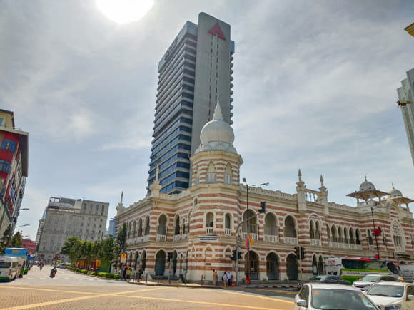
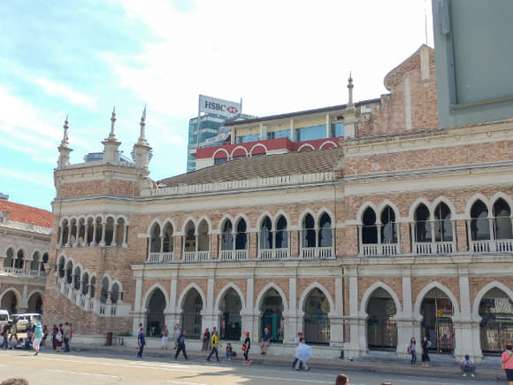
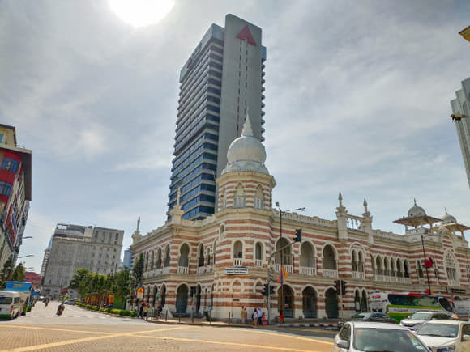
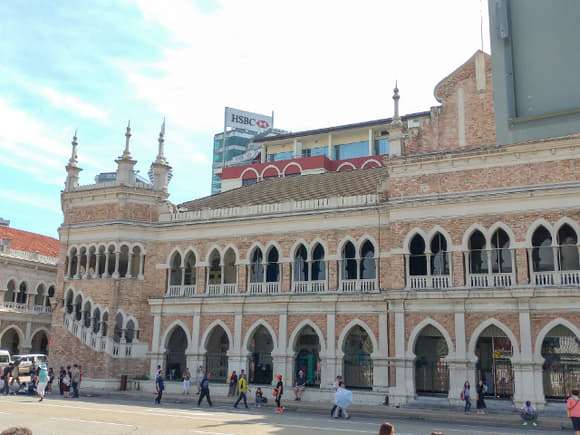
中午食團餐，飲肉骨茶，食完就去廣場影吓相，行吓outlet, 都差不多去機場準備離境。

去到機場有D時間tea吓，差不多晚上七點半上機返香港，结束佐五日嘅馬來西亞之旅，聽日要正常工作啦！